https://twitter.com/johnleach/status/680369111399006208 @johnleach Would have been lightwave 5 when it turned up on windows I remember switching to win95 to speed up rendering times :)
Good news everyone, Swanky Paint has been #Steam Greenlit!
https://steamcommunity.com/sharedfiles/filedetails/?id=269543375
many hand by serbs in 48x48 #pixelart using the C64 palette. Visit http://paint.lo4d.net/ to draw your own!
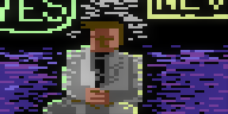
third toe by Crustolio in 48x48 #pixelart using the C64 palette. Visit http://paint.lo4d.net/ to draw your own!
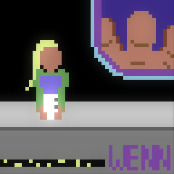
free picture frame by Crustolio in 48x48 #pixelart using the AppleII palette. Visit http://paint.lo4d.net/ to dra…
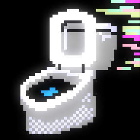
sixth pin by serbs in 64x64 #pixelart using the EGA palette. Visit http://paint.lo4d.net/ to draw your own!
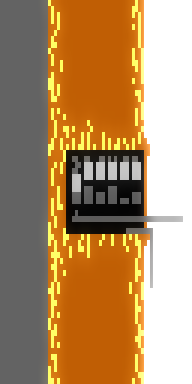
obvious nose by Crustolio in 32x32 #pixelart using the MSX palette. Visit http://paint.lo4d.net/ to draw your own!
@bradfordgeek I've seen other monks wandering around Bradford. Maybe its a hipster thing.
obvious nose by serbs in 32x32 #pixelart using the MSX palette. Visit http://paint.lo4d.net/ to draw your own!
parallel muscle by serbs in 48x48 #pixelart using the GameBoy palette. Visit http://paint.lo4d.net/ to draw your …
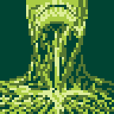
multiple downstairs by serbs in 48x48 #pixelart using the Swanky16 palette. Visit http://paint.lo4d.net/ to draw …
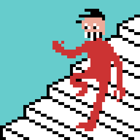
easy nail by serbs in 16x16 #pixelart using the EGA palette. Visit http://paint.lo4d.net/ to draw your own!
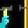
heavy boy by Crustolio in 32x32 #pixelart using the C64 palette. Visit http://paint.lo4d.net/ to draw your own!
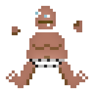
spooky island by Crustolio in 64x64 #pixelart using the Swanky16 palette. Visit http://paint.lo4d.net/ to draw yo…
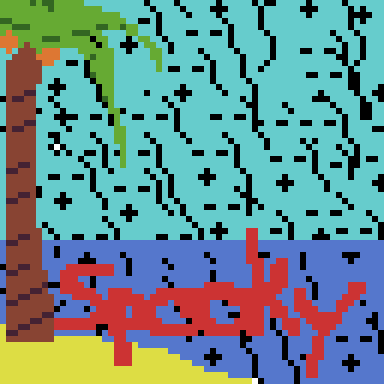
little wrist watch by Crustolio in 48x48 #pixelart using the Swanky16 palette. Visit http://paint.lo4d.net/ to dr…
mistaken north by gtdwnnnt in 48x48 #pixelart using the Swanky32 palette. Visit http://paint.lo4d.net/ to draw yo…
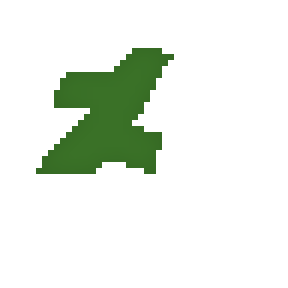
chilly footprints by ABRAXAS in 48x48 #pixelart using the Swanky16 palette. Visit http://paint.lo4d.net/ to draw …
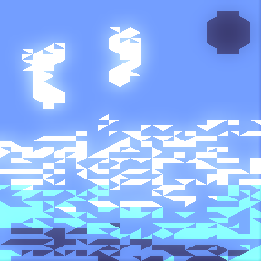
rich third floor by Crustolio in 64x64 #pixelart using the Swanky32 palette. Visit http://paint.lo4d.net/ to draw…
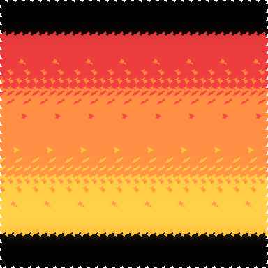
blind root by Big_Al in 64x64 #pixelart using the Swanky32 palette. Visit http://paint.lo4d.net/ to draw your own!